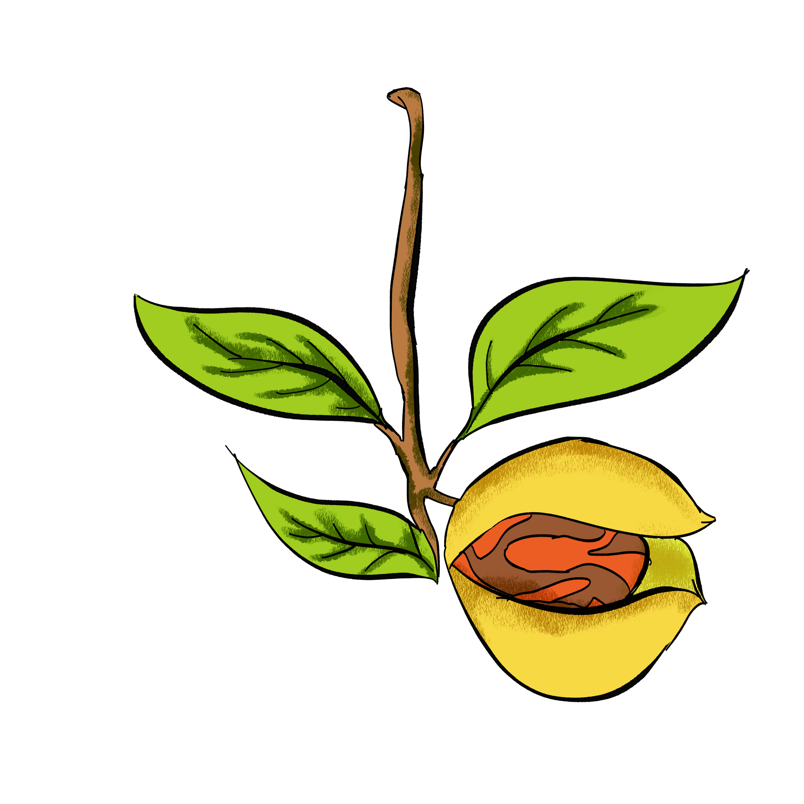
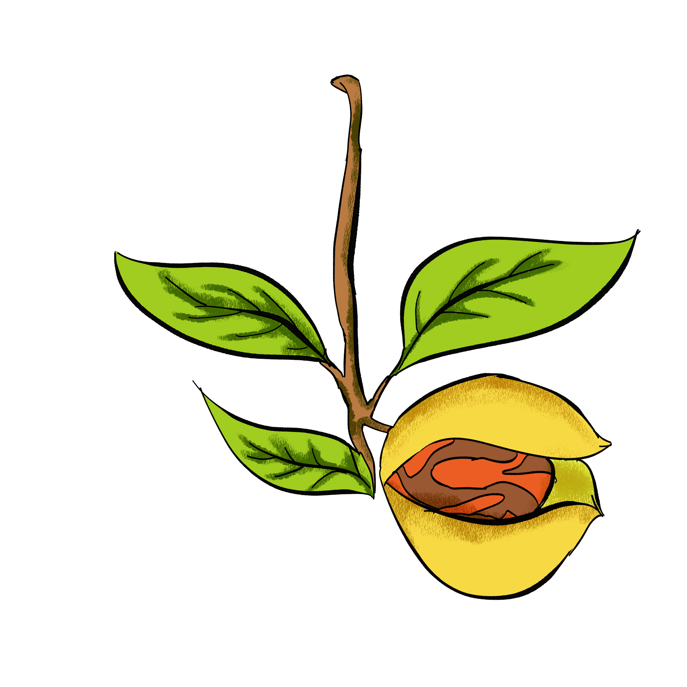
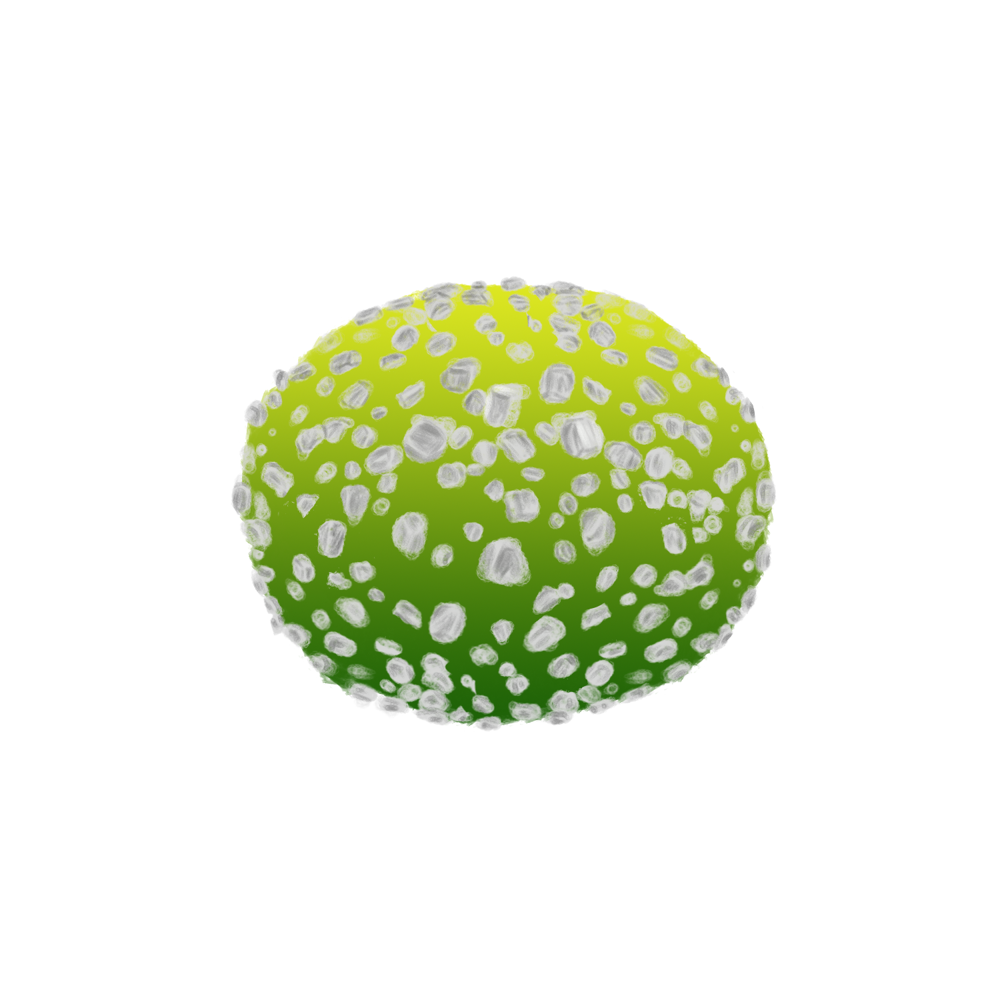
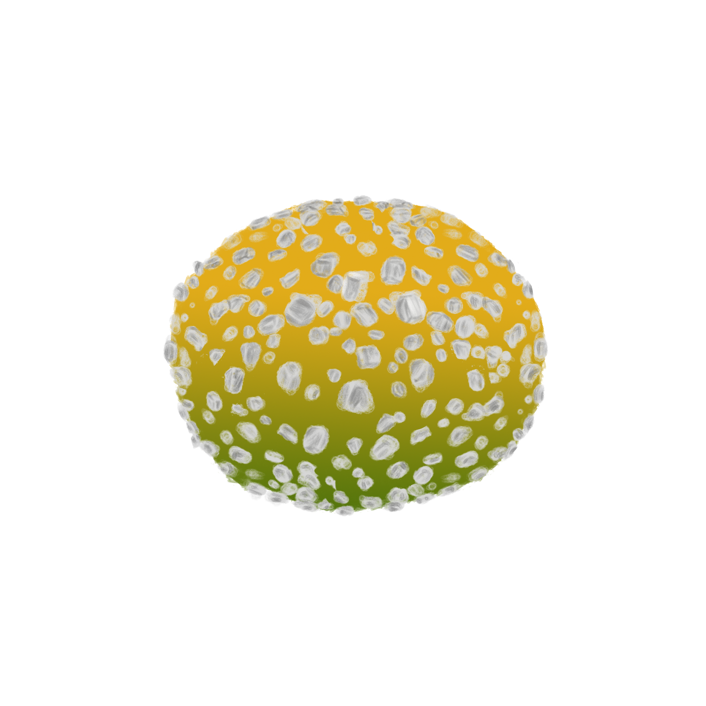
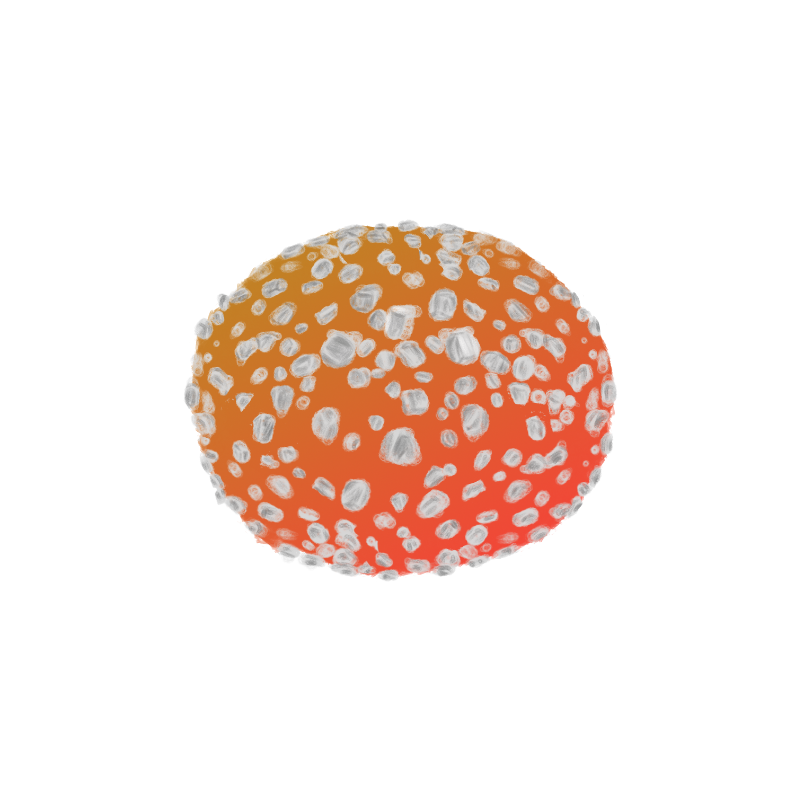
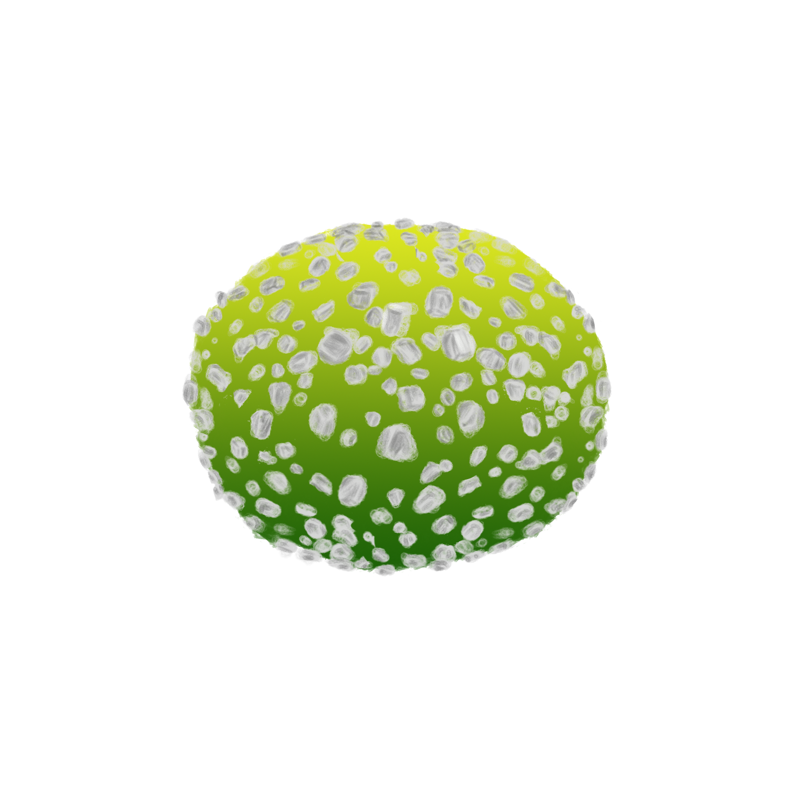
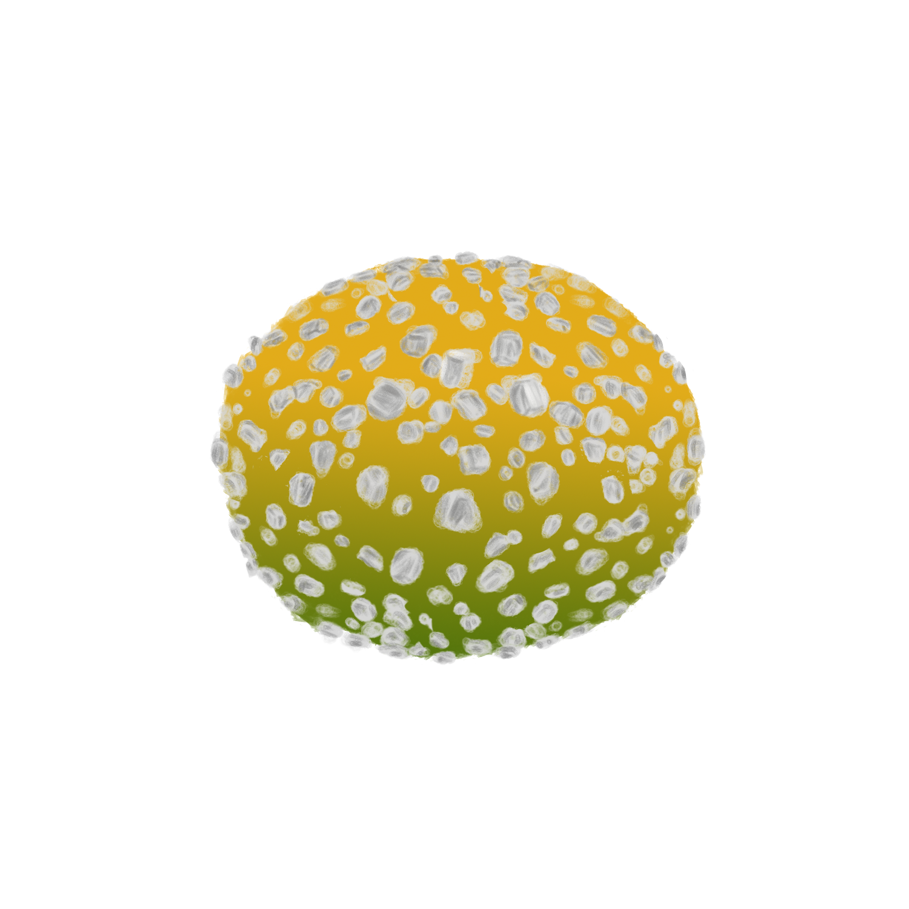
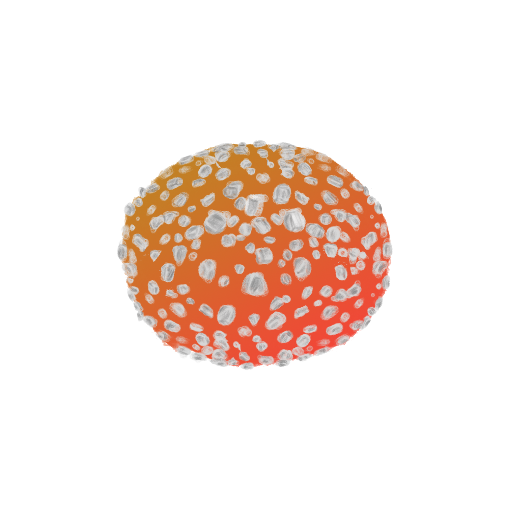
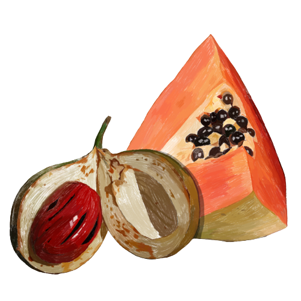

Manisan Paladang

 

 





Manisan paladang merpakan manisan buah yang berbahan buah pala dan buah pepaya. Dalam proses pembuatannya terdapat beberapa tahap. Adapun tahap pembuatan manisan ini adalah:
Pertama, buah pala dan buah pepaya muda yang sudah dibersihkan diparut hingga halus. Kemudian dicampur jadi satu dengan adonan yang sudah diberi pewarna makanan, lalu kembali diaduk sambil dimasak. Setelah matang, Manisan Paladang dibentuk bulat-bulat kecil lalu dilumuri gula pasir dan dijemur beberapa jam sampai benar-benar kering. Setelah kering, Manisan Paladang siap dibungkus dan dipasarkan ke sejumlah toko oleh-oleh
Selain rasanya yang unik, manisan ini memiliki banyak manfaat karena kedua bahan utamanya merupakan buah kaya manfaat.
Sementara itu, buah pepaya yang kita kenal mampu mengatasi masalh penceraan ternyata memiliki banyak manfaat lainnya, yaitu:
Pala mengandung berbagai mineral seperti magnesium, mangan, zat besi, dan kalsium. Mineral-mineral ini penting untuk kesehatan tulang, pembentukan darah, dan fungsi otot.
Pepaya merupakan sumber serat, antioksidan serta vitamin C. Makan buah ini berarti menghindarkan diri dari kolesterol. Tambahkan semangkuk pepaya dalam diet harian Anda, maka dengan mengunyah buah lezat ini, Anda bisa terhindar dari penyakit jantung.
Selain rasanya yang unik, manisan ini memiliki banyak manfaat karena kedua bahan utamanya merupakan buah kaya manfaat.
Buah pala sendiri merupakan rempah yang memiliki aroma khas. Selain aroma khasnya, buah pala memiliki banyak manfaat bagi kesahatan tubuh, antara lain:
Buah pala mengandung senyawa antioksidan, seperti miristikin, elemicin, dan eugenol. Antioksidan membantu melawan radikal bebas dalam tubuh, yang dapat membantu melindungi sel-sel dari kerusakan oksidatif
Kaya Antioksidan
Buah pala memiliki sifat yang dapat merangsang produksi enzim pencernaan, membantu dalam proses pencernaan makanan. Hal ini dapat membantu mengurangi masalah pencernaan seperti gas, kembung, dan gangguan pencernaan lainnya.
Meningkatkan Pencernaan
Mengandung Mineral Penting
Pepaya memiliki sifat anti-inflamasi yang kuat dan kaya vitamin C. Jadi makan pepaya itu baik sekali untuk memperkuat tulang dan melindungi Anda terhadap arthritis atau radang sendi.
Melindungi Dari Radang Sendi
Mencegah Kanker Usus & Prostat
TERIMA KASIH SUDAH MAMPIR!